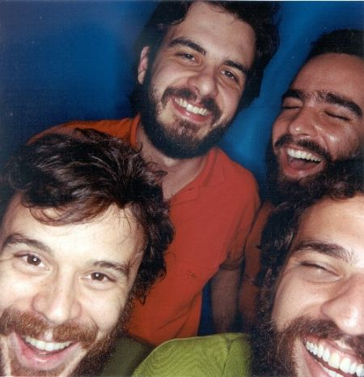
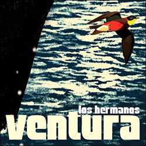

Último Romance - Los Hermanos
Uma das referências hoje no rock brasileiro, o Los Hermanos percorreu um caminho tortuoso até chegar ao
reconhecimento merecido.
Além de ser um raro exemplo de banda que surge independente e conquista o seu espaço em gravadora grande sem
abrir
mão das próprias convicções, o Los Hermanos precisou passar pela dura prova de superar a força de seu próprio
hit.
Catapultados para os quatro cantos do país com "Anna Júlia", o grupo teve de suar a camisa para mostrar que não
era
apenas uma sensação de verão. Um dos seus sucessos é "Último Romance" do Álbum Ventura, lançado em 07 de maio de
2003.
Ventura é o terceiro álbum da banda brasileira Los Hermanos que teve indicação para o Grammy Latino e Melhor
Álbum
de
Rock Brasileiro. Letra:
O quanto eu te falei
Que isso vai mudar
Motivo eu nunca dei
Você me avisar, me ensinar
Falar do que foi pra você
Não vai me livrar de viver
Quem é mais sentimental que eu?
Eu disse e nem assim se pôde evitar
De tanto eu te falar
Você subverteu o que era um sentimento e assim
Fez dele razão pra se perder
No abismo que é pensar e sentir
Ela é mais sentimental que eu
Então fica bem
Se eu sofro um pouco mais
(Se ela te fala assim, com tantos rodeios
É pra te seduzir e te ver buscando o sentido
Daquilo que você ouviria displicentemente
Se ela te fosse direta, você a rejeitaria)
Eu só aceito a condição de ter você só pra mim
Eu sei, não é assim, mas deixa
Eu só aceito a condição de ter você só pra mim
Eu sei, não é assim, mas deixa eu fingir e rir

Marcelo Camelo: voz e guitarra, baixo em "Deixa o Verão", arranjo de metais
Rodrigo Amarante: voz e guitarra, baixo em "Conversa de Botas Batidas", arranjo de metais
Rodrigo Barba: bateria
Bruno Medina: teclados e piano
Em suas entrevistas e shows nota-se o compromisso e o prazer que a banda tem em simplesmente estar
junta e poder passar seu recado sem nenhuma pretensão de ser considerada pelo suposto mercado, pelos modismos ou
por
algum padrão de sucesso imposto simplesmente visando a vendagem, o lucro ou a ostentação. Los Hermanos é mais
que uma
banda de rock: é uma banda de música.
Mais que uma banda de música, são artistas. Muito além de artistas, são pessoas. Gente como qualquer outra,
porém com
um propósito, muito além de apenas “ganhar a vida” ou “fazer dinheiro”, desejam dar seu recado. E ouvindo suas
músicas
com atenção e com o coração aberto, tenho a impressão de que o recado que eles passam é: “Los Hermanos não somos
nós
(a banda), e sim você, que está nos ouvindo. Ou melhor, somos todos nós. Irmãos. Juntos. No mesmo barco”.